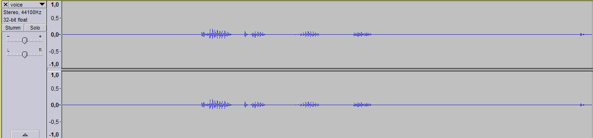
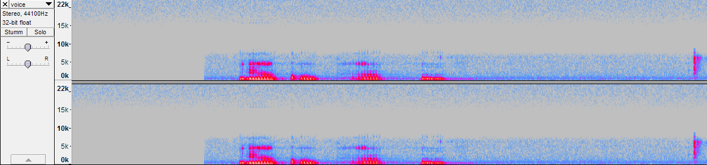
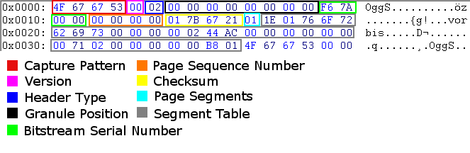

3.4 Mediendateien
a)
Ursprüngliche Datei aus 1.3):Zeitverlauf:

Sonagramm:

Datei rückwärts abgespielt:
b)
Jede .ogg Datei besteht aus "pages", Dateiabschnitten, die jeweils mit dem sogenannten "Capture Pattern", dem String "OggS", anfangen. Die ersten 58 Bytes der Datei stellen deren Header dar. In diesem Header sind keine Metainformationen enthalten, weil ich keine in Audacity angegeben habe. Allgemein lassen sich im .ogg Dateiformat jedoch Informationen wie Interpret, Plattenfirma, Album, Genre, Datum und mehr speichern (Quelle: http://de.wikipedia.org/wiki/Vorbis_comment)
(Quelle: http://en.wikipedia.org/wiki/Ogg)
Um die ogg-Datei in eine bmp umzuwandeln, erstellt man zunächst ein einfarbiges bmp, dessen Dateigröße etwas kleiner als die .ogg-Datei ist. Durch Ausprobieren in GIMP bin ich so auf eine Größe von 90px*100px eines komplett weißen Bildes gekommen. Dann öffnet man die bmp in einem Hex-Editor (in meinem Fall NEXT-Soft-Hex-Editor). Da das Bild einfarbig ist, sollte die Datei komplett mit einem Farbwert gefüllt werden, bei einem weißen Bild "FF". Nur am Anfang stehen andere Werte, die den Header bilden. Nun selektiert man den Header komplett und ersetzt mit ihm den Header der .ogg Datei. Jetzt muss diese Datei nur noch neu als .bmp abgespeichert werden und dann sollte sie von jedem anderen Programm als bmp interpretiert werden.
c)
Manipulationsschritte:
1. Bilddatei in GIMP als .bmp exportieren
2. .bmp in NEXT-Soft Hex-Editor öffnen
3. .bmp Header (54 Bytes) durch .ogg Header ersetzen
4. Audacity -> Importieren -> als Rohdaten importieren
5. als .wav exportieren